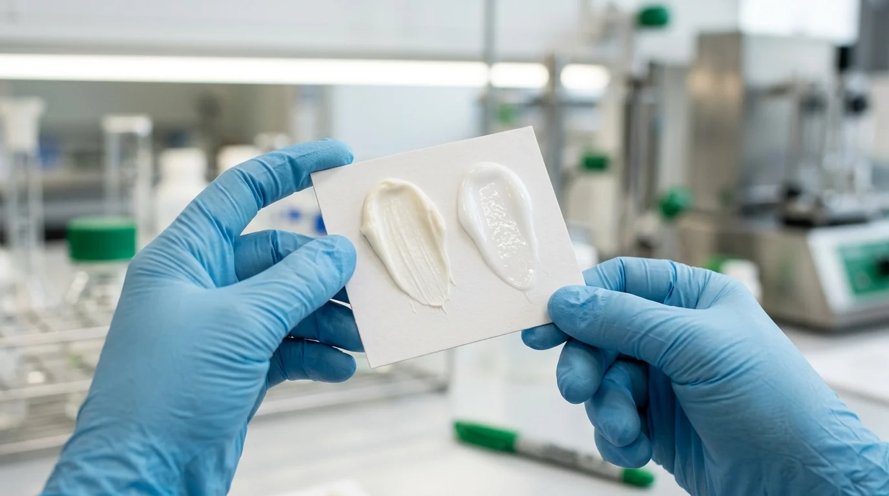

Sampling dan Persetujuan Produk Maklon
Penulis: Tim Editorial Maklon Kosmetik ID
Dipublikasikan: 5 Oktober 2026
Estimasi Baca: 5 menit

Daftar Isi Artikel Buka/Tutup
Ringkasan Poin Inti
- Sampel laboratorium adalah prototipe fisik awal dari brief spesifikasi Anda.
- Evaluasi sampel meliputi organoleptik: tekstur, aroma, warna, dan daya serap.
- Uji stabilitas dilakukan R&D untuk memastikan formula tidak pecah atau berjamur.
- Persetujuan ACC tertulis menjadi syarat mutlak sebelum pendaftaran BPOM dan produksi massal.
Prosedur Pembuatan Sampel Laboratorium
Setelah brief produk disepakati, tim R&D Maklon Kosmetik ID meracik sampel awal di laboratorium. Sampel dikirimkan kepada pemesan untuk dites secara langsung guna mendapatkan masukan tekstur dan sensasi pemakaian.

Parameter Evaluasi Sampel oleh Pelanggan
Saat menerima sampel dari laboratorium, lakukan pemeriksaan terhadap 4 aspek ini:
- Tekstur & Daya Serap: Apakah krim meresap dengan nyaman tanpa meninggalkan rasa berminyak berlebih?
- Warna & Kejernihan: Apakah warna formula sesuai dengan konsep visual brand Anda?
- Aroma / Fragrance: Apakah wewangian terasa pas dan tidak mengganggu saat diaplikasikan di wajah?
- Kompabilitas Kemasan: Uji sampel pada wadah pot/botol pump untuk memastikan formulasi mengalir lancar.
"Persetujuan sampel ACC adalah jaminan bahwa produk akhir manufaktur massal akan identik 100% dengan prototipe yang Anda impikan."
Siap Meminta Sampel Produk Anda?
Konsultasikan formulasi impian Anda dan dapatkan sampel R&D dari laboratorium kami.
Pertanyaan Umum (FAQ)
Kami memberikan fasilitas revisi formula hingga formulasi benar-benar memuaskan dan disetujui (sample approval). Evaluasi dapat mencakup penyesuaian kekentalan, daya serap, kadar busa, aroma, maupun warna produk.
Anda perlu mengevaluasi kenyamanan saat diaplikasikan (tekstur, sensasi dingin/lembab, kecepatan meresap), aroma setelah beberapa menit, ada/tidaknya rasa lengket, serta stabilitas cairan saat didiamkan dalam wadah sampel.
Pembuatan sampel R&D awal rata-rata membutuhkan waktu 7 hingga 14 hari kerja sejak brief disetujui. Sampel dikemas aman dan dikirim langsung ke alamat Anda untuk diuji coba secara mandiri.
Setelah Anda menandatangani form persetujuan sampel (Sample Approval Sheet), tim regulatori kami akan langsung mendaftarkan formula tersebut ke sistem BPOM untuk proses notifikasi izin edar dan memesan bahan baku untuk produksi massal.
Tim Editorial Maklon Kosmetik ID
Spesialis riset produk dan regulasi industri manufaktur kosmetik B2B.